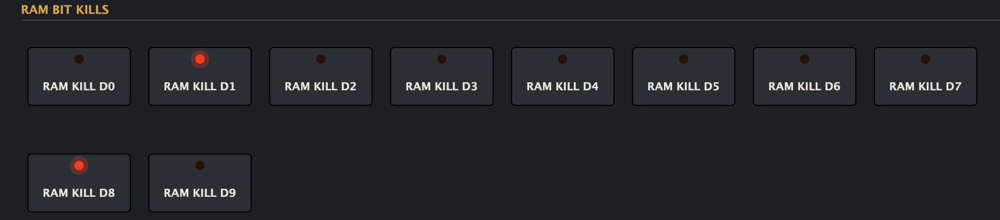

The Glitchalizer
TenTen
Pitch shifting with the glitches left in.
A 1970s rack pitch shifter and delay, rebuilt in software chip by chip, then circuit-bent. It stutters, warbles, drifts and sometimes falls apart mid-note. Most pitch shifters work hard to hide that. This one gives you a Bends page.
Plugin for Mac and Windows: VST3, AU, CLAP.

Buy for $25 Demo for Mac Demo for Windows
$25 once, plus local tax. No subscription, account or activation. Download links by email right away. 14-day refund.
Listen
- Drums Corrupted RAM
- Bass Droid Chatter
- Drum Machine Falling Spiral
- Drums Dropping Snare
- Modular Whole-Tone Staircase
- Polysynth Seasick Chorus
- Piano Cross-Fed Detune Wash
- Piano Tired Unit
- Synth Bass Slow Clock Lo-Fi
- Acoustic Dual Detune
- Guitar Major Third Above
- Guitar Slapback 30 ms
The demo is the whole plugin. It fades to dry after 10 minutes; reload it and carry on. No email needed.
Thicken anything.
A few cents of detune and a short delay, and one vocal becomes two. Split a guitar across two units and it goes wide.
Snares that fall off a cliff.
Hit harder and the pitch drops further. Feedback keeps it falling.
Spirals and staircases.
Send the repeats back through the shifter and they climb or tumble. Turn on overdrive and they grow and scream.
Play it.
Play the pitch from a MIDI keyboard. Let it wobble on its own, let the envelope follower bend it with every hit, or draw it in with automation.
Decades of wear, under your control.
Dial in drift, warm-up and age. Every instance is its own unit, with its own quirks, so no two sound quite alike. Hit Stock for a factory-fresh one.
Now break it.
Kill memory bits. Remove the crossfades. Read the memory backwards. Freeze it. Some of this the original only did on its way to the repair bench. The rest it never did at all.

40+ presets, from Vocal Doubler to Corrupted RAM. Every control has a tooltip, so you can skip the manual.
Specs
| Mac | macOS 11 or later, Apple Silicon and Intel. VST3, AU, CLAP, standalone |
|---|---|
| Windows | 64-bit Windows 11. VST3 and CLAP, in a zip you copy into place |
| Pitch and delay | One octave down to one octave up. Delay up to 112.5 ms |
| Channels | Mono, stereo, linked up to 16. Second output with its own delay tap |
| License | One per person, on computers you own or control. Updates within your major version |
| Privacy | The plugin has no DRM and no telemetry. It checks a public version number at most once a day, and you can turn that off |
| Coming | Pro Tools / AAX |
Questions
Why so much CPU?
It runs the circuit instead of approximating it: 10-bit conversion, and logic stepping about 268,000 times a second per unit. A stereo track costs about twice a mono one. If a session gets tight, freeze or bounce the track.
Does it add latency?
1.3 ms at 48 kHz or 2.2 ms at 44.1 kHz, reported to your DAW so it compensates. Pitch shifting adds about 30 ms more, as the original did, because that’s part of the sound.
Why might Windows flag it?
It isn’t code-signed yet, so some antivirus tools may flag it. Signing and an installer are coming.
What’s LINK.COM on my statement?
That’s your TenTen purchase. Link handles payment and tax. Your download links arrive by email right after.
I already own it. Should I install the demo?
No, it replaces your paid copy. Reinstall the paid version to get it back.
Lost your download links?
Go on, break something.